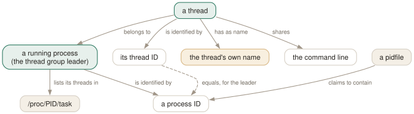

Day 06
Threads and pidfiles
One level below a process, and one source of truth beside it.
By the end of today you can
- explain why
pgrep gmainfinds nothing andpgrep -w gmainfinds ninety-five things - tell a TID from a PID in pgrep output, and know when the distinction bites
- use a pidfile as a criterion, and say what its three failure modes look like
Every query so far has ignored most of the machine
pgrep walks processes, and a process is really a thread group — the kernel schedules threads, and what you have been selecting is only each group's leader. On a desktop the leaders are a minority, and the names of everything else have been invisible for five days.
Every thread has its own comm, and libraries set them deliberately so that debuggers and top can tell them apart. Look inside one process and the names have almost nothing to do with the program:
$ ls /proc/1230/task
1230 1255 1256 1260 1348 1349 1358
$ for t in /proc/1230/task/*; do echo "$(basename $t) $(cat $t/comm)"; done
1230 udisksd
1255 gmain
1256 pool-spawner
1260 gdbus
1348 udisks-probing-
1349 udisks-uevent-m
1358 cleanup
Only the first line has the name pgrep has been matching against. gmain, gdbus and pool-spawner are glib's worker threads, and they appear in hundreds of processes on a modern desktop without pgrep ever admitting they exist.

-w exists for: a thread has a name of its own, invisible to every query that does not use the flag, while the command line is shared by the whole group. That is why -w changes which processes match and not merely how they are printed — and why -w -f returns one result per thread rather than one per process.-w changes what matches, not just what prints
The manual page describes -w as "Shows all thread ids instead of pids", which reads like an output flag. It is not. It changes the unit pgrep iterates over — tasks instead of thread group leaders — so the pattern is tested against each thread's own name:
$ pgrep gmain
$ echo $?
1
$ pgrep -w -c gmain
95
Ninety-five threads called gmain, in ninety-five different processes, none of which pgrep would mention without the flag. The other direction is just as informative:
$ pgrep -f -c udisksd # processes
1
$ pgrep -w -f -c udisksd # threads, because they share the command line
7
Pidfiles: the answer the process gave you
Everything else in this course infers identity from the process table. A pidfile is the opposite: a number the program wrote down itself, which is authoritative right up until it is not.
-F reads PIDs from a file and treats them as one more criterion, so it ANDs with everything else. It also works alone, with no pattern:
$ pgrep -o -x bash > /tmp/x.pid
$ pgrep -F /tmp/x.pid -a
239195 /usr/bin/bash
$ pgrep -F /tmp/x.pid nosuchname
$ echo $?
1
It fails in three distinguishable ways, and all three are exit status 1:
- The PID is gone
- No output, no message. Identical to any other empty result — which is correct, and is what a health check wants.
- The file is not a number
pgrep: pidfile not valid. A truncated or half-written file lands here.-Land no lockpgrep: Locking check for pidfile failed: No such file or directory. The file exists but nobody holds a lock on it.
Today's habit
Next time top or a profiler shows you a name you cannot find, try -w before concluding the tool is lying. It costs one keystroke and it is the answer surprisingly often.
Tomorrow the query stops being a question. Everything learned so far selects a set of processes; pkill and pidwait take that same set and do something irreversible to it.
# Day 6: which processes have a thread called this, and how many
pgrep -w -l gdbus | wc -l
# Day 6: a pidfile check that a recycled PID cannot fool.
pgrep -F /run/myapp.pid -x myapp --quiet
New vocabulary
Commands
| Command | Does |
|---|---|
ls /proc/PID/task | Every thread of a process, by TID. |
cat /proc/PID/task/TID/comm | One thread's own name — often nothing like the process's. |
pgrep -w -f nginx | All threads of every matching process, since threads share the command line. |
Options
| Option | Does |
|---|---|
-w, --lightweight | Walk threads rather than processes: match every thread's own name, and print TIDs. |
-F, --pidfile | Read PIDs from a file and use them as a criterion. |
-L, --logpidfile | With -F, fail unless the pidfile is locked. |
Drillsdo these in a real terminal, today
Self-check
Answer out loud first, then unfold.
You are told a process called gdbus is running and eating CPU. pgrep gdbus returns nothing, exit 1. Is your colleague wrong?
No — they are reading top in threads mode, or ps -L. gdbus is a thread name, not a process name: glib gives its D-Bus worker thread that comm, and it lives inside some larger process such as udisksd.
Without -w pgrep only considers thread group leaders, and a leader's name is the process's name. pgrep -w gdbus finds the thread and prints its TID; to find out what it belongs to, read /proc/TID/status and look at Tgid.
Why does pgrep -w -f udisksd return seven results when pgrep -f udisksd returns one?
Because -f matches the command line, and pgrep(1)'s NOTES say it plainly: threads may not share the process's name, but they do all share its command line. udisksd has seven tasks with seven different comm values and one identical /proc/…/cmdline.
So -w with -f is a thread counter: it returns every task of every matching process. That is occasionally what you want and almost never what you meant to type, especially with pkill on the other end.
A start-up script does if pgrep -F /run/app.pid; then echo already running; fi and wrongly reports the app as running after a hard reboot. What went wrong, and what does -L have to do with it?
The pidfile was never cleaned up, and the PID in it has been reused by something unrelated. pgrep checked that the PID exists, which it does — it just belongs to a different program now. A stale pidfile whose PID has been recycled is indistinguishable from a live one.
Two defences. Add a criterion, so that the PID must also be the right program: pgrep -F /run/app.pid -x myapp. Or use -L, which requires the file to be locked — a lock the kernel drops when the holder dies, so a stale file fails the check. That only works if the daemon takes the lock in the first place, which many do not.
What is different about the ordering of pgrep -w output, and why should a script care?
Ordinary pgrep output is in ascending numeric order — a consequence of walking /proc, which the kernel presents sorted. -w descends into each process's task directory as it goes, so TIDs come out grouped by process and unsorted overall: 1291 1262 1305 1271 1255 ….
A script that assumes "the first line is the lowest number" — a common way of guessing at the main thread — gets a different answer every time the process table shifts. If you want the leader, ask for the leader: drop -w.
Cheat sheet
pgrep -w NAME # walk THREADS: match each thread's own comm, print TIDs
pgrep -w -f NAME # every thread of every match - threads share the cmdline
# pgrep gmain -> nothing pgrep -w -c gmain -> 95
# -w output is NOT sorted. A TID is not a PID except for the leader.
# ls /proc/PID/task ; cat /proc/PID/task/TID/comm
pgrep -F file # PIDs from a file, as one more AND criterion
pgrep -L -F file # ...and fail unless the file is locked
# gone -> exit 1, silent. not a number -> 'pidfile not valid', exit 1.
# A RECYCLED pid is undetectable: always add -x myapp as well.
Everything through Day 06
Commands
| Command | Does |
|---|---|
pgrep sshd | List the PID of every process whose name matches the ERE sshd. |
pgrep -u root sshd | Two criteria, AND-ed: owned by root and named sshd. |
pgrep -u root,daemon | One criterion, OR-ed: owned by root or by daemon. No pattern at all. |
pgrep 'systemd|cron' | One ERE, two alternatives. Two bare patterns would be an error. |
pgrep --version | Print the procps-ng version this course is checked against. |
pgrep -f 'python3 .*worker' | Match the full command line, so the interpreter's arguments count. |
pgrep -x systemd | Only processes named exactly systemd — not systemd-logind. |
pgrep -A -f myscript.sh | Match command lines, but ignore every ancestor of this pgrep. |
cat /proc/PID/comm | The 15-character name pgrep matches by default. |
tr '\0' ' ' < /proc/PID/cmdline | The full command line pgrep matches under -f. |
ps -fp $(pgrep -d, -x sshd) | The man page's own idiom: hand a comma list to ps. |
renice +4 $(pgrep chrome) | Word-splitting turns newline-separated PIDs into separate arguments. |
pgrep -a -Q -f worker | List command lines with argument boundaries preserved. |
pgrep -P $$ | Everything your current shell forked directly. |
pgrep -t pts/3 -a | Everything running on one terminal — the other window. |
pgrep -g 0 | Processes in pgrep's own process group; -s 0 does the same for the session. |
pgrep -n -a firefox | The most recently started match, with its command line. |
pgrep -O 3600 -u $USER -a | Everything of yours that has been running for over an hour. |
pgrep -r D -a | Processes in uninterruptible sleep — the ones a dying disk produces. |
ls /proc/PID/task | Every thread of a process, by TID. |
cat /proc/PID/task/TID/comm | One thread's own name — often nothing like the process's. |
pgrep -w -f nginx | All threads of every matching process, since threads share the command line. |
Options
| Option | Does |
|---|---|
-c, --count | Print how many processes matched instead of their PIDs. |
--quiet | Print nothing; the exit status is the whole answer. Long form only. |
-f, --full | Match against the whole command line instead of the process name. |
-x, --exact | Require the pattern to match the whole string, not a part of it. |
-i, --ignore-case | Match case-insensitively. |
-A, --ignore-ancestors | Drop every ancestor of this pgrep from the result. The fix for -f in scripts. |
-l, --list-name | Print the process name after the PID. Still the 15-character name, even under -f. |
-a, --list-full | Print the full command line after the PID. |
-Q, --shell-quote | Shell-quote each argument in -a output, so boundaries survive. Undocumented. |
-d, --delimiter | Join the PIDs with this string instead of a newline. A trailing newline is still added. |
-u, --euid | Match on the effective user — the authority the process is acting with. |
-U, --uid | Match on the real user — who started it. |
-G, --group | Match on the real group. Name or number. |
-P, --parent | Match processes whose parent is one of these PIDs. |
-g, --pgroup | Match on process group. 0 means pgrep's own. |
-s, --session | Match on session ID. 0 means pgrep's own. |
-t, --terminal | Match on controlling terminal, named without /dev/. |
-p, --pid | Match only these PIDs — a filter, not a lookup. Undocumented. |
-n, --newest | Keep only the most recently started match. |
-o, --oldest | Keep only the least recently started match. |
-O, --older | Keep matches started more than this many seconds ago. |
-r, --runstates | Keep matches in one of these kernel run states. A comma list. |
-v, --inverse | Return everything the query did not select — the whole query, not just the pattern. |
-w, --lightweight | Walk threads rather than processes: match every thread's own name, and print TIDs. |
-F, --pidfile | Read PIDs from a file and use them as a criterion. |
-L, --logpidfile | With -F, fail unless the pidfile is locked. |